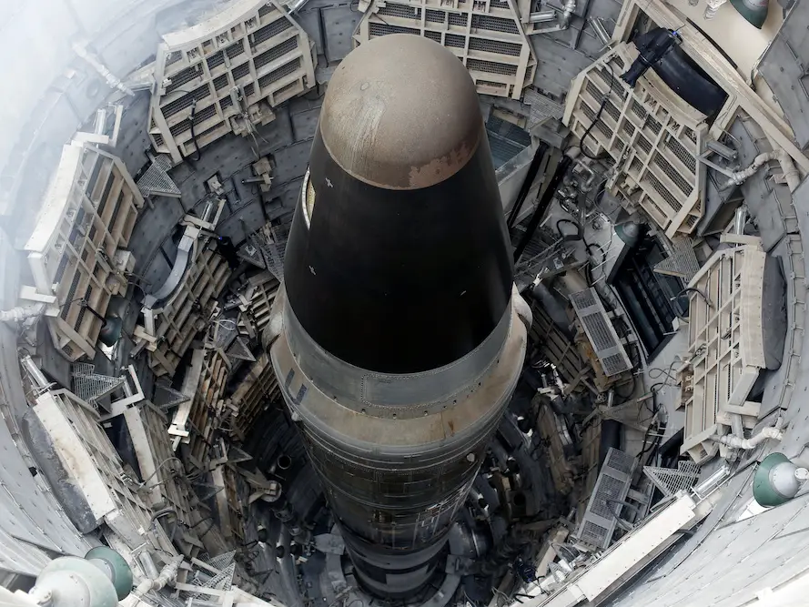
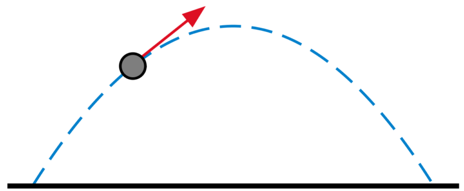
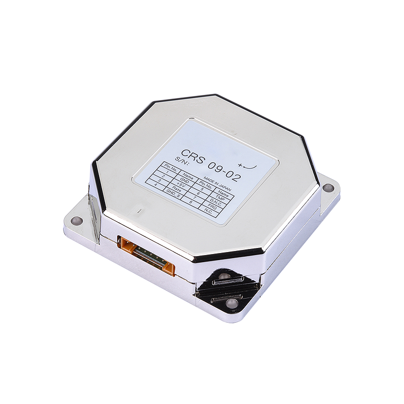
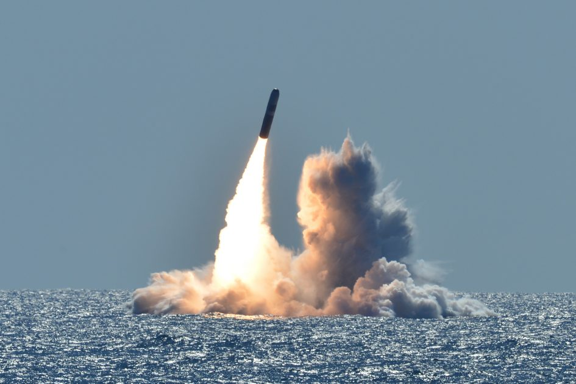

Long Range Guidance
Certain missiles can reliably hit specific buildings from a continent away. But just how can they achieve near-perfect accuracies travelling at thousands of meters per second in a turbulent atmosphere?

Before I explain the methods, it's useful to know some terminology:
CEP/circular error probability - 50% of missiles land within this range of the target. In the image, this is the inner circle. Most of the rest land within double this distance.

Ballistic missile - any missile that follows a parabolic trajectory. They are only powered for the first stage, then the engine cuts off and they drift to their target.
Cruise missiles - missiles with aircraft engines and short wings. They are continually powered. Most are subsonic, so travel as fast as planes, and often fly low to the ground to avoid detection, but the very fastest travel 10 times that [3].

Key methods:
First of all, preset guidance, a form of inertial guidance. If you need a simple method that’s fully self-contained within the missile, this is the go-to. You set the target, and the missile calculates the trajectory it needs to reach it. Then, using accelerometers to track speed and gyroscopes to track direction, the missile keeps track of where it is and where it's heading.
This method depends entirely on the precision of its instruments, so early examples had low accuracies. But modern accelerometers can measure to millionths of a g, and gyroscopes millionths of a degree per second of turn. Furthermore, you can use several in combination for even better accuracy. This method is used by Minuteman ICBMs [5], a $7bn cold-war missile that still has variants in service [6].

Next, the well-known system of GPS: three satellites send a signal, explaining where they are and what precise time the signal was sent. The missile uses this to work out where it is. Technically, GPS is just the American system: the ESA has Galileo, the Russians have GLONASS and the Chinese and Japanese each have their own systems. Ground stations can also be used to do this.
Celestial navigation [8] is one I found particularly clever. A camera is placed on the missile and set to look for a star, or several, recording the angles above the horizon. Then, using precalculated knowledge of where stars will be, the missile narrows down its location. The idea is to correct inaccuracies in inertial guidance. Even the best gyroscopes gradually build up inaccuracies, and a millionth of a degree of error for ten minutes, exacerbated by 1000km of travel, builds up. This new information is used to correct this, putting the missile back on track. This is used on Trident missiles [9].
Scene matching, for example TERCOM (terrain contour matching) is a type used by cruise missiles. Information about the terrain it will fly over is loaded into the missile, then sensors compare what it sees on the ground below to what’s in its database. A famous example is the Tomahawk.
In conclusion, most missiles use a form of inertial guidance as a basis for their navigation. However, missiles can use several methods from stars to satellites to refine their accuracy and achieve incredible precision.
Final note: These guidance methods mostly apply to ballistic missiles aimed at static targets. Several extra methods, such as radar homing or heat-seeking become relevant for other applications, like targeting aircraft.

Quiz
Test your knowledge with this article's quiz.
See next: V-Weapons
References
[1] Business insider "missile image"
[2] Wikipedia "circular probability image" author: Ariel196
[3] TASS news, find here
[4] toppr, "trajectory formula"
[5] National air and space museum, "minuteman guidance system"
[6] Missile Defense Project, Missile Threat, Center for Strategic and International Studies “Minuteman III” September 19, 2016
[7] Althen, "high precision gyroscope image"
[8] The Oxford Essential Dictionary of the U.S. Military“stellar guidance”
[9] Wikipedia contributors. Trident (missile). In Wikipedia, The Free Encyclopedia.(2024, January 18), from here Retrieved 16:37 February 15, 2024
[10] USNI news, "trident missile image" from US Navy
{kind=link}